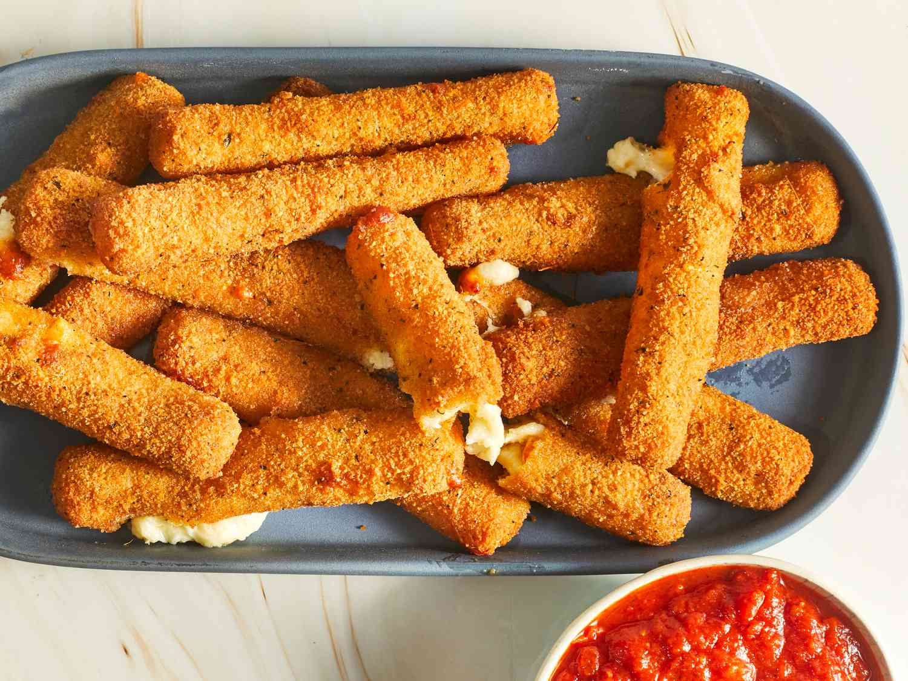

Mozzarella sticks are one of America's favorite cheesy snacks consisting of battered, breaded, and deep-fried pieces of mozzarella cheese. Although they are traditionally served as an appetizer with marinara sauce, these cheesy sticks can also be paired with plum sauce, honey mustard sauce, raspberry sauce, Ranch dressing, or barbecue sauce.
Meal prep time : 25 minutes
Servings : 8